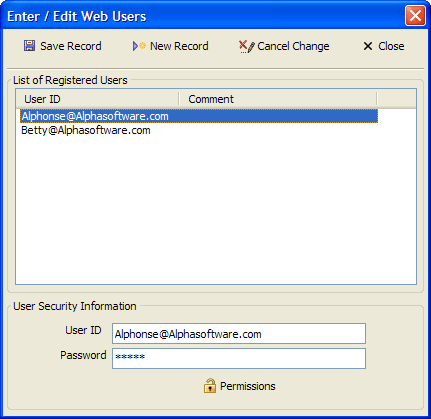

Enter/Edit Web Users Dialog
This picture shows a sample Enter/Edit Web Users dialog as configured by the Configure Desktop Web Users Form dialog. Note that the Comment field is an additional, un-required field that was added to the user security table.

To add a user record:
Click New Record to create a new entry in the user security table.
Enter the required data in the User Security Information controls.
Click Permissions to display the Permissions dialog.
Select the group(s) to which this user belongs and click OK.
Click
 Save to save your changes.
Save to save your changes.
Limitations
Web publishing applications only.
See Also